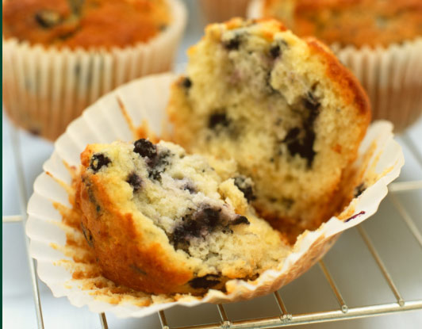

Recipes

-
Blueberry Muffins
Prep time: 15 minutes Cook time: 25 minutes Yield: Makes one dozen muffins.
Muffins are not as easy to get right as one might think. Too dry, too dense, to sugary—these are all problems that one can encounter when trying to bake the perfect muffin. This blueberry muffin recipe however, makes them just right—fluffy and full of blueberries—and still good the next day!
VIEW -
Pesto Pasta w/ Spinach & Avocado

Prep time: 15 minutes Cook time: 25 minutes Yield: Makes one dozen muffins.
Quick and easy pasta with pest, spinach, peas, and avocado.
VIEW -
Banana Bread

Prep time: 10 minutes Cook time: 1 Hour Yield: Makes one loaf.
The beauty of this banana bread recipe is you don’t need a fancy mixer! A fork to whisk the eggs and a sturdy spoon to mix the batter are all you need. The sugar amount is flexible. The original recipe calls for a cup of white sugar, but most people, including me, do just fine with 3/4 of a cup, and many are happy with a 1/2 cup. You can toss in a cup of chopped nuts, raisins, or chocolate chips if you want, or put the batter into muffin tins and make muffins instead.
VIEW